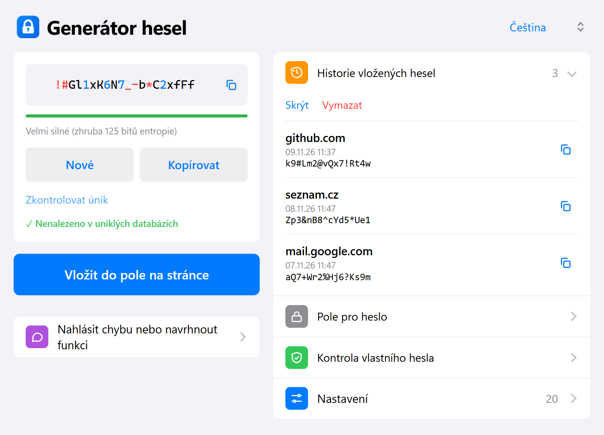
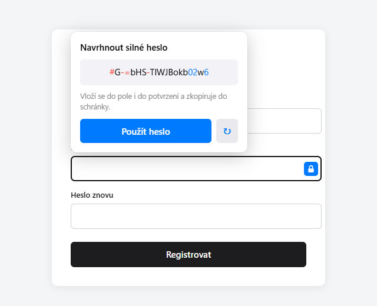
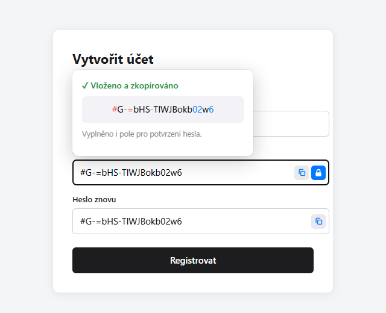
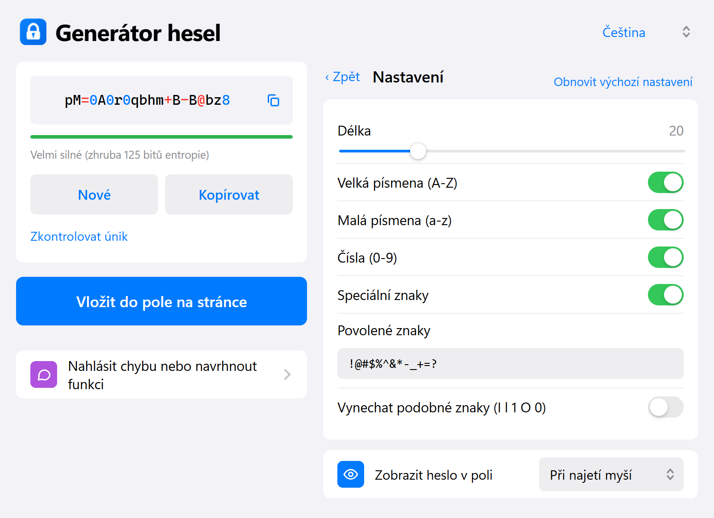
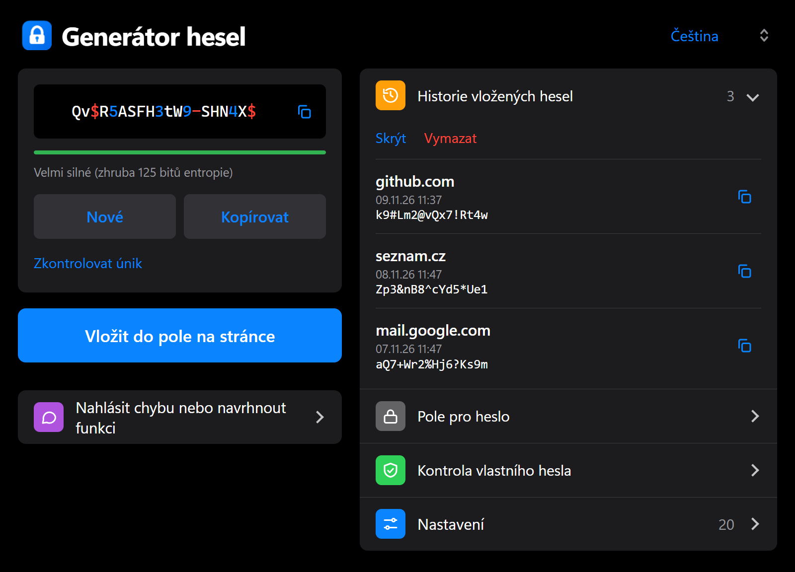

Rozšíření pro Chrome, které vygeneruje heslo, vloží ho i do potvrzení, zkontroluje, jestli neunikla, a nic přitom neposílá na žádný server. A Chrome extension that generates a password, fills the confirmation field too, checks whether it has leaked, and never sends anything to a server.

Jednoduché na ovládání, přitom s věcmi, které běžné generátory nemají.Simple to use, yet with things most generators lack.
Délka 8 až 64 znaků, velká a malá písmena, čísla, speciální znaky, vlastní povolené znaky a vynechání podobných (I l 1 O 0). Generuje se kryptografickým generátorem prohlížeče.8 to 64 characters, upper/lower case, digits, symbols, your own allowed characters and look-alike exclusion (I l 1 O 0). Uses the browser's cryptographic generator.
U registračních formulářů se nabídne silné heslo samo. Jedním klikem se vloží do pole i do potvrzení hesla. Funguje i přes pravé tlačítko myši.On sign-up forms a strong password is offered automatically. One click fills the field and the confirmation field. Also available from the right-click menu.
Při najetí myší, dvojklikem, po kliknutí do pole nebo při držení Ctrl. V poli je navíc ikona kopírování, takže heslo můžeš kdykoli zkopírovat.On hover, double click, focus or while holding Ctrl. A copy icon sits in the field so you can copy the password any time.
Ověří heslo v databázi Have I Been Pwned. Odešle se jen prvních 5 znaků otisku, celé heslo prohlížeč nikdy neopustí.Checks the password against Have I Been Pwned. Only the first 5 characters of the hash are sent; the password itself never leaves the browser.
Kdyby se registrace nepovedla, heslo najdeš s webem a časem vložení. Ukládá se jen do zavření prohlížeče, nebo trvale, nebo vůbec. Rozhodneš ty.If a sign-up fails you can find the password with the site and time. Kept until the browser closes, permanently, or not at all. Your choice.
Po 30 sekundách, 1 nebo 2 minutách se zkopírované heslo ze schránky samo smaže.The copied password is wiped from the clipboard after 30 seconds, 1 or 2 minutes.
Čeština, angličtina, němčina, španělština, portugalština, francouzština a italština. Vzhled se řídí světlým nebo tmavým režimem systému.Czech, English, German, Spanish, Portuguese, French and Italian. Follows the system light or dark mode.
Klikneš do pole pro heslo a doplněk navrhne silné heslo. Jedním tlačítkem se vloží a zkopíruje.Click a password field and the extension suggests a strong password. One button inserts and copies it.

Vyplněná pole zůstanou odkrytá s ikonou kopírování. Po odeslání formuláře se zase zakryjí.Filled fields stay visible with a copy icon. They are hidden again when the form is submitted.

Délka, sady znaků, odkrývání hesel, mazání schránky i historie. Výchozí hodnoty jsou bezpečné.Length, character sets, reveal mode, clipboard clearing and history. Defaults are safe.

Vzhled inspirovaný iOS, který se přizpůsobí systému.An iOS-inspired look that follows your system.

Z Chrome Web Store, až bude schválené. Do té doby jde nainstalovat ručně.From the Chrome Web Store once approved. Until then you can install it manually.
chrome://extensions a zapni Režim pro vývojáře.Open chrome://extensions and enable Developer mode.manifest.json.Click Load unpacked and choose the folder containing manifest.json.Krátce: žádné účty, žádné servery, žádná analytika.In short: no accounts, no servers, no analytics.
Platné od 9. 11. 2026. Rozšíření „Generátor hesel“ neshromažďuje, nesleduje ani nepředává žádné osobní údaje vývojáři ani třetím stranám. Nemá žádné vlastní servery ani analytiku.
chrome.storage.session). Můžeš zvolit trvalé uložení v tomto počítači (chrome.storage.local) nebo historii vypnout. Kdykoli ji jedním kliknutím smažeš. Historie se nesynchronizuje.Pokud sám klikneš na „Zkontrolovat únik“, rozšíření pošle službě Have I Been Pwned jen prvních 5 znaků SHA-1 otisku hesla (metoda k-anonymity). Heslo ani celý otisk se neodesílá a služba z toho heslo zjistit nemůže. Jinak rozšíření nekomunikuje po síti.
Pouze nastavení (délka, sady znaků, jazyk, režimy) v synchronizovaném úložišti prohlížeče (chrome.storage.sync), případně historie podle výše. Rozšíření nečte obsah stránek, jen zjišťuje, zda na stránce existuje pole pro heslo.
| Oprávnění | Důvod |
|---|---|
storage | Nastavení a (volitelně) historie. |
clipboardWrite | Kopírování hesla a jeho pozdější smazání ze schránky. |
contextMenus | Položka „Vygenerovat heslo a vložit“ v nabídce pravého tlačítka. |
alarms, offscreen | Časovač a skrytý dokument pro automatické smazání schránky (service worker ke schránce nemá přístup). |
Přístup k http(s)://*/* | Rozpoznání polí pro heslo, nabídka u pole, vložení a zobrazení hesla v poli. Obsah stránek se nečte ani neodesílá. |
Kód je otevřený: github.com/sturmjan/generator-hesel. Dotazy, chyby a nápady zakládej jako issue na GitHubu.
Kategorie: Nástroje (Productivity). Jazyky: čeština, angličtina, němčina, španělština, portugalština, francouzština, italština.
Krátký popis (max 132 znaků):Silná hesla jedním klikem. Rozpozná pole pro heslo, vloží heslo i do potvrzení, zkontroluje únik a zkopíruje ho do schránky.
Data usage (formulář „Privacy practices“): zaškrtnout „Authentication information“ (hesla zpracovávaná lokálně), nic neprodává, nepoužívá pro účely mimo hlavní funkci ani pro posuzování bonity.
Effective 9 November 2026. The "Password Generator" extension does not collect, track or transmit any personal data to the developer or to third parties. It has no servers and no analytics.
chrome.storage.session). You can choose permanent local storage (chrome.storage.local) or turn it off. You can clear it with one click. It is never synced.If you click "Check for breaches", the extension sends only the first 5 characters of the SHA-1 hash of the password to Have I Been Pwned (k-anonymity). The password and the full hash are never sent, and the service cannot recover the password. The extension makes no other network requests.
Only settings (length, character sets, language, modes) in the browser's sync storage (chrome.storage.sync), plus the optional history described above. The extension does not read page content; it only detects whether a password field exists.
| Permission | Reason |
|---|---|
storage | Settings and (optionally) history. |
clipboardWrite | Copying the password and wiping it from the clipboard later. |
contextMenus | "Generate password and insert" in the right-click menu. |
alarms, offscreen | Timer and hidden document for the automatic clipboard wipe (service workers cannot access the clipboard). |
Access to http(s)://*/* | Detecting password fields, the offer next to the field, inserting and revealing the password. Page content is neither read nor sent. |
The code is open: github.com/sturmjan/generator-hesel. Please file questions, bugs and ideas as a GitHub issue.
Category: Productivity. Languages: Czech, English, German, Spanish, Portuguese, French, Italian.
Short description (max 132 chars):Strong passwords in one click. Detects password fields, fills the confirmation, checks for breaches and copies to the clipboard.
Data usage ("Privacy practices" form): tick "Authentication information" (passwords handled locally); nothing is sold, used for purposes unrelated to the core function, or used for creditworthiness.
Napiš to na GitHub. Stačí účet na GitHubu, zbytek je formulář. Rozšíření má odkaz přímo v okně.Post it on GitHub. A GitHub account and a short form is all it takes. The extension links there from its window too.